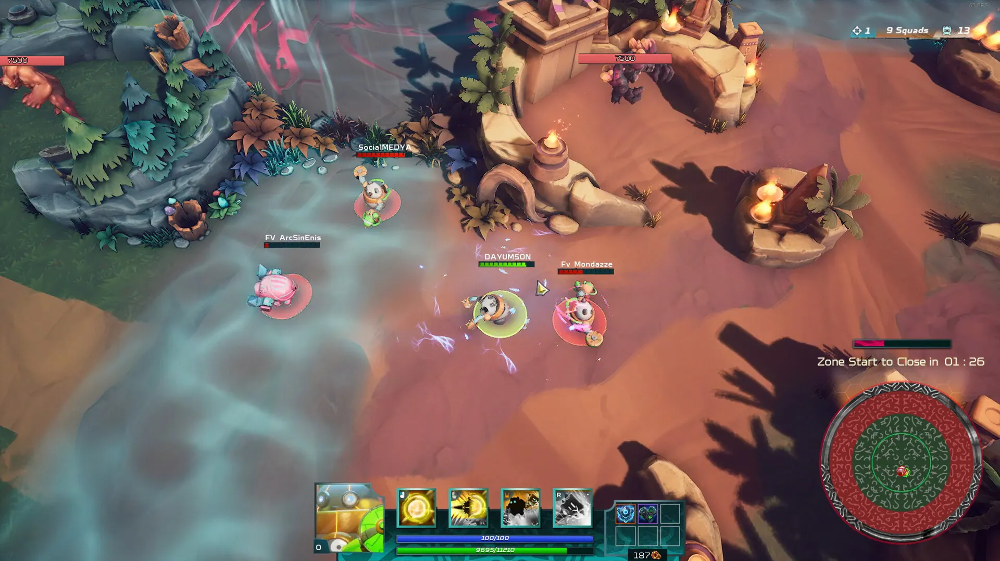
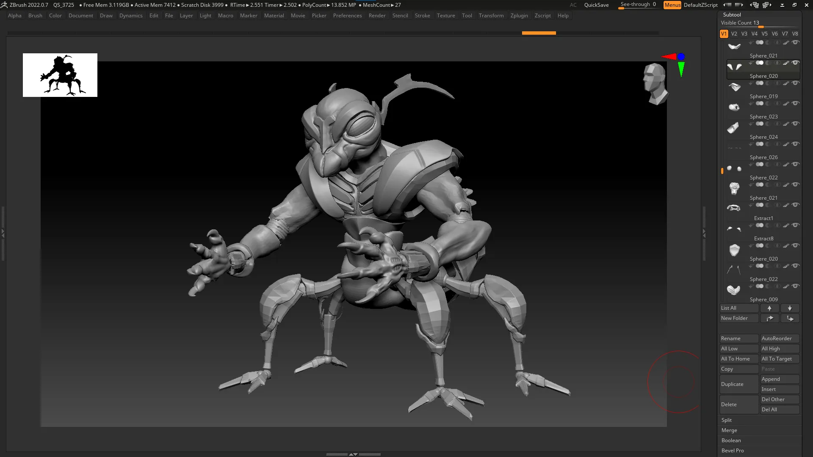

Değerli oyuncularımız,
Yaz mevsiminin sona ermesiyle, kendimizi gelişme, keşif, yenilik ve büyüme ile dolu olağanüstü bir yol
haritası üzerine düşünürken buluyoruz. Bizi bu düşüncelere sevk eden de sizler oldunuz. Oyunumuz Hit and
Boom’un ilk kapalı beta aşaması, işbirliği, yenilik ve büyüme ile dolu unutulmaz bir yolculuktu.
Topluluğumuzun tepkisi, beklentilerimizin çok üzerinde oldu ve her hafta sonu, yeni olasılıklar ve
fikirlerin kilidini açtı. Değerli geri bildirimleriniz, oyunun şimdiki halini şekillendirmekle kalmayıp
geleceğini de yönlendirdi. Bu desteğiniz için size ne kadar teşekkür etsek azdır.

İlk Kapalı Beta Aşamamızın Özeti
İlk kapalı beta aşamamız 14 Temmuz 2023'te başladı ve o zamandan beri bizlere heyecan ve keşif dolu bir
fırtına yaşattı. Oyunumuzun kapılarını her hafta sonu Cuma’dan Pazar’a kadar açtık ve sizleri keşfetmeye,
etkileşime girmeye ve belki de en önemlisi eleştirmeye davet ettik. Oyunculardan gelen tepkiler
azımsanmayacak bir şekilde etkileyiciydi ve her kesimden oyuncuların değerli geri bildirimleri, geliştirme
yolculuğumuz için yol haritası haline geldi. Gelin kapalı beta süreci boyunca yaptığımız değişikliklere
biraz daha derinlemesine bir göz atalım:
Yeni içerikler:
-
Yeni Harita Düzeni Testi: Orijinal düzenin çok dar geldiğini kabul ederek, daha geniş ve macera dolu
bir harita tasarladık ve test ettik. Odağımız estetikten oyun dinamiklerine kaydı, ancak son sürümün
etkileyici grafikler ve nefes kesici aydınlatma için optimize edileceğinden emin olun.
- Yeni Oyun İçi Arayüz: Oyun deneyiminizi yükseltmek üzere sezgisel bir düzenle tasarlandı.
- Ambiyans Sesler: Sizi dünyamızın içine çekmek için için oyun haritasının tamamına stratejik olarak
yerleştirildi.
- Oyun İçi Eşya Dükkanı Kısayolu: Alışverişe başlamak için “I” tuşuna basın — küçük bir detay ancak
büyük bir kolaylık!
- Çıkış Düğmesi:Umarız çok sık ihtiyaç duymazsınız! ^^
- Ayrıca, oyuna çok yakın tarihte ekleyeceğimiz bazı yeni özellikler için de perde arkasında bazı
hazırlıklar yaptık :)
Oynanış İyileştirmeleri:
- Animasyon ve Efekt Süresi: Daha iyi görsel çekicilik ve denge için tekrar ayarlandı.
- Hata Düzeltmeleri: Küçük hatalardan, şaşırtıcı kamera sürüklenme sorununa kadar, hataları bulduk ve
yok ettik.
Ek İçerik:
- Yeni Hedefler: Sizleri i büyülemek ve zorlamak için yeni görevler ekledik..
- Güçlendirmeler, Oyun İçi Ekonomi Düzenlemeleri, Canavarlar ve Savaş Sisi: Oyunu zenginleştirmek için
çekici unsurların birleşiminden oluşan bir yeni çalışma yaptık..
- Dengelemeler ve Düzeltmeler: Scorp, Panda ve Kaplumbağa gibi karakterlere, ince silah ve yetenek
ayarlarıyla birlikte kritik güncellemeler yaptık.
13 Ağustos 2023, bu heyecan verici ilk aşamanın acı-tatlı sonuydu, Ancak aynı zamanda, GameX 2023 Dijital
Oyun ve Eğlence Fuarı için enerjik hazırlıklarımızın başlangıcını da simgeliyordu. Kapalı beta sürecinde
yaptığımız değişiklikler ve iyileştirmeler, olağanüstü bir oyun deneyimi sunma konusundaki bağlılığımızı
yansıttığını düşünüyoruz. Oynanışı çeşitlendirmek için tasarlanmış yeni bir harita düzeninden, derinlik ve
denge ekleyen belirli karakter düzeltmelerine kadar, her adım bizler için bir öğrenme deneyimi oldu.
Seslerinizi dinlemek için gerçekten çok çalıştık, ve geri bildirimlerinizi somut güncellemelere dönüştürmeye
uğraştık.
Devam eden çalışmalar ve Gamex 2023
30 Ağustos 2023’te başlayacak olan GameX hazırlıklarımız tam gaz devam etmekte, ve heyecanımız hissedilir
derecede artıyor.
Geliştirici ekibimizin mükemmeliyet arayışındaki yorulmaz çabası sadece sanat ekibimizin yeni karakter
çalışmalarına verdiği özverileri ve yaratıcılıkları ile kıyaslanabilir.. Karakterlerimizin yeni görünüşü ve
en az bir yeni oynanabilir karakterin GameX Expo’da sizin için hazır olacağını umuyoruz. Ancak hızdan çok
kaliteye bağlı kalmaya devam ediyoruz ve bu yüzden bu konuda bir söz vermiyoruz. Biraz sabır :)
Oyun içi yeniliklerin yanı sıra GameX standımızda sizleri sürpriz hediyeler ve ödüllü turnuvalar ile
karşılamaya da hazırız!
Sırada ne var?
Gelişme yolculuğumuzun bir sonraki aşamasını dört gözle beklerken, yapılacak çok işimiz olduğunun
farkındayız. Amacımız açık ve sarsılmaz: mükemmelliği, yaratıcılığı ve toplulukla bağlantısı ile öne çıkan
bir oyun yaratmak. Devam eden desteğinizle, bu vizyonu gerçekleştireceğimizden eminiz.

Bu kapalı beta aşamasında yer alan tüm oyunculara bir kez daha teşekkür ederiz. İşbirliğiniz ve geri
bildirimleriniz bu oyunu gerçekten “oyuncular tarafından, oyuncular için yapılan bir oyun” haline getirdi.
Bizi takip etmeye devam edin, geri bildirimleri gönderin ve GameX 2023 için takvimlerinizi işaretleyin.
Sıradaki yenilikleri sizlerle paylaşmak için sabırsızlanıyoruz!
-Funverse Ekibi
Hit and Boom’un sınırlı beta sürecine halen katılmadıysanız ve harekete geçmek istiyorsanız,
buradan
kayıt olabilirsiniz! Kayıtlarımız açık ve sizleri bekliyor!
Steam’den ücretsiz
indirebilirsiniz
veya
Discord’umuza katılmak isterseniz
Bir
sorun ile mi
karşılaştınız?
Geri
bildiriminiz mi var? Belki size
destek olabiliriz.